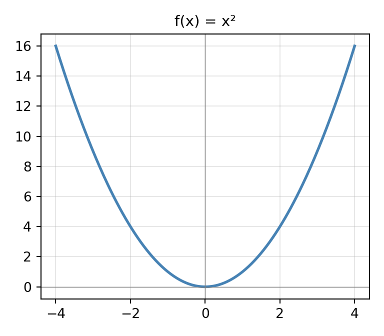

Cálculo I
Relaciones y funciones
Elvis M. Sánchez Rogel ![]()
Universidad Técnica de Machala
2026-04-27
Los 5 protagonistas de \(f(x)\) — Notación de Euler
Si \(x \in A\) para referirnos al elemento de \("B"\) que \("f"\) asocia a \("x"\), usaremos la notación \("f(x)"\), que los profesionales leen efe de x, pero tú debes leer imagen de x según f.

¡Aviso immmportante!:
¡Están condenados al fracaso los principiantes que se empecinen en leer como profesionales!, pues tras la notación \(f(x)\) hay 5 protagonistas, y el cerebro debe estar simultáneamente pendiente de todos ellos: 
El conjunto \("A"\), que es protagonista invisible, pues \("A"\) no parece por ningún lado en la notación \("f(x)"\) … ¡pero está!.
El conjunto \("B"\), también invisible
La ley \("f"\) que asocia elementos de \("A"\) con elementos de \("B"\); es protagonista visible, pues en la notación \("f(x)"\) hay una \("f"\).
El elemento \("x"\) del conjunto \("A"\); también es visible, pues en la notación \("f(x)"\) hay una \("x"\).
El 5° protagonista es un elemento de \("B"\), pero no un elemento de cualquiera de \("B"\), el 5° protagonista es el elemento de \("B"\) que la ley \("f"\) asocia a \("x"\), y para denotarlo nadie ha inventado una notación más clara y concisa que \("f(x)"\), introducida por Euler en 1734.
Funcion real de variable real
¿No es fascinante cómo una función real de variable real puede describir el comportamiento de tantas situaciones en el mundo real, conectando conceptos abstractos con la realidad tangible?
Dirichlet,1854

Llamamos función real de variable real a toda correspondencia \(f: \mathfrak{R} \longrightarrow \mathfrak{R}\); o sea, una función real de variable real es una ley o criterio \(f\) que asocia números reales con números reales.
Se dice que \(f: \mathfrak{R} \longrightarrow \mathfrak{R}\) es una función real porque su conjunto final es \(\mathfrak{R}\) se dice que \(f\) es de variable real porque su conjunto inicial es \(\mathfrak{R}\)
Para expresar que el número real \(x \in \mathfrak{R}_{inicial}\) puede ser el que queramos, se dice que \(x\) es una variable independiente; y para expresar que el número real \(f(x) \in \mathfrak{R}_{final}\) que \(f\) asocia a \(x\) escapa por completo a nuestro control, pues es \(f\) quien decide el valor de \(f(x)\), se dice que el número real que denotamos \("f(x)"\) es una variable dependiente.
Ejemplos
Por ejemplo, al hablar de la función \(f:\mathfrak{R} \longrightarrow \mathfrak{R}\) tal que \(f(x)=\frac{x}{x-1}\) se habla de la ley \("f"\) que al número real \("x"\) le asocia el número real \(\frac{x}{x-1}\); así, al número \(5\) la ley \("f"\) le asocia el número \(\frac{5}{5-1}\) , al número \(9\) le asocia el número \(\frac{5}{5-1}\)….. y escribemos:
\[ f(5)=\frac{5}{5-1}=\frac{5}{4}\quad ;\quad f(9)=\frac{9}{9-1}=\frac{9}{8} \]

Función real de variable real
Una función es un tipo especial de relación binaria en la que a cada elemento del dominio le corresponde exactamente un único elemento del rango.
Definición (Función)
Sea \(X\) y \(Y\) dos conjuntos. El subconjunto \(f \subseteq X \times Y\) de \(X \times Y\) se llama función si para todo \(x \in X\) hay como máximo un \(y \in Y\) tal que \((x, y) \in f\).
Para que una relación \(f\) de un conjunto \(X\) a un conjunto \(Y\) sea considerada una función, debe cumplir dos condiciones:
Notación
- Si \(f\) es una función de \(X\) a \(Y\), se escribe \(f: X \to Y\).
- Si \((x, y) \in f\), se usa la notación \(y = f(x)\).


Aunque esta curva se dibuja con una línea continua, no es una función.
Función real de variable real — criterio gráfico
El único criterio es que puede haber como máximo una flecha que comience desde cualquier \(x \in X\) y termine en cualquier \(y \in Y\).
Aunque esta curva se dibuja con una línea continua, no es una función.
Definir una función como un subconjunto es matemáticamente preciso, pero de muy bajo nivel. Para mayor utilidad, podemos introducir una abstracción definiendo funciones con fórmulas , como o simplemente.
\[f : \begin{array}[t]{ccc} \, X & \longrightarrow & Y \\ x & \longmapsto & x^2 \end{array} \]
Funciones uniformes
Se dice que la función \(f: \mathfrak{R} \longrightarrow \mathfrak{R}\) es uniforme si cada \(x \in \mathfrak{R}_{\text{inicial}}\) que tiene imagen en \(\mathfrak{R}_{\text{final}}\), tiene una única imagen.
Por ejemplo, la función “f” tal que \(f(x)=1+x^2\) es uniforme, pues cada número real “x” tiene una única imagen.
Por otro lado, la función “g” tal que \((g(x))^2=1+x^2\) no es uniforme, pues \((g(x))^2=1+x^2 \Longrightarrow g(x)=\pm \sqrt{1+x^2}\); o sea, cada número real “x” tiene dos imágenes posibles.
\[g(7)=\pm \sqrt{1+7^2}=\pm \sqrt{50} \quad ;\quad g(4)=\pm \sqrt{1+(-4)^2}=\pm \sqrt{17}\]

Si la función “f” es uniforme, las paralelas al eje de ordenadas no cortan o cortan en un único punto a la gráfica de “f”.
Si “f” no es uniforme, hay rectas paralelas al eje de ordenadas que cortan a dicha curva en dos o más puntos.
Continua..
En otras palabras, el dominio es el subconjunto de donde comienzan las flechas; la imagen es el subconjunto de donde apuntan las flechas.


¿Por qué es importante esto? En primer lugar, están directamente relacionados con la invertibilidad de una función. Si consideramos la representación mental de “puntos y flechas”, invertir una función es tan simple como invertir la dirección de las flechas. ¿Cuándo podemos hacerlo? En algunos casos, esto podría no resultar en una función, como en la figura a continuación.
Para poner el estudio de las funciones sobre fundamentos teóricos sólidos, introducimos el concepto de funciones inyectivas , sobreyectivas y biyectivas.
Funciones inyectivas, sobreyectivas y biyectivas
Definiciones
Sea \(f: X \to Y\) una función arbitraria.
(a) \(f\) es inyectiva si para cada \(y \in Y\) existe al menos un \(x \in X\) tal que \(f(x) = y\).
(b) \(f\) is sobreyectiva si para cada \(y \in Y\) existe un \(x \in X\) tal que \(f(x) = y\).*
(c) \(f\) is biyectiva si esta es inyectiva y sobreyectiva
En términos de flechas, la inyectividad significa que cada elemento de la imagen tiene como máximo una flecha que apunta hacia él, mientras que la sobreyectividad significa que cada elemento tiene al menos una flecha.
Cuando ambas se cumplen, tenemos una función biyectiva, que puede invertirse correctamente. Cuando la inversa existe, es único. Ambos y igual a la función identidad en sus respectivos dominios.


Natural exponential (\(e^x\))


Operaciones con funciones
Las funciones, al igual que los números, tienen operaciones definidas. Dos números se pueden multiplicar y sumar, pero ¿se puede hacer lo mismo con las funciones? Sin ninguna dificultad, se pueden sumar y multiplicar con un escalar como
\[ \begin{align*} (f+g)(x) &:= f(x) + g(x), \\ (cf)(x) &:= c f(x), \end{align*} \]
dónde \(c\) es un escalar
Otra operación esencial es la composición . ¡Consideremos la famosa regresión logística por un momento! El estimador en sí se define por
\[ f(x) = \sigma(ax + b), \]
dónde
\[ \sigma(x) = \frac{1}{1 + e^{-x}} \]
es la función sigmoidea. El estimador \(f(x)\) es la composición de dos funciones: \(l(x) = ax + b\) y la función sigmoidea, por lo que
\[ f(x) = \sigma\big(l(x)\big). \]

Para dar otro ejemplo, una red neuronal con varias capas ocultas es simplemente la composición de un conjunto de funciones. La salida de cada capa se incorpora a la siguiente, que es exactamente como se define la composición.
En general, si \(f: B \to C\) y \(g: A \to B\) son dos funciones, entonces su composición está definida formalmente por
\[ f \circ g: A \to C, \quad x \mapsto f(g(x)). \]


Modelos mentales de funciones
Una idea más intuitiva y útil para entender las funciones, más allá de su definición formal como un conjunto de flechas, es visualizarlas a través de sus gráficos. El gráfico de una función es una herramienta clave para el análisis matemático.
Si \(f: \mathbb{R} \to \mathbb{R}\) es una función que asigna un número real a un número real, podemos visualizarla usando su gráfica, definida por
\[ \text{graph}(f) = \{ (x, f(x)): x \in \mathbb{R} \}. \]
Este conjunto de puntos puede dibujarse en el plano bidimensional. Por ejemplo, en el caso de la famosa unidad lineal rectificada (ReLU). El gráfico se ve así. \[ \mathrm{ReLU}(x) = \begin{cases} 0 & \text{si } x < 0 \\ x & \text{si } 0 \leq x, \end{cases} \]

_DUBBED_ES/slide_0023_00-00-57.jpg)
_DUBBED_ES/slide_0026_00-01-05.jpg)
_DUBBED_ES/slide_0033_00-01-19.jpg)
_DUBBED_ES/slide_0040_00-01-31.jpg)
_DUBBED_ES/slide_0048_00-01-47.jpg)
_DUBBED_ES/slide_0055_00-01-58.jpg)
_DUBBED_ES/slide_0064_00-02-18.jpg)
_DUBBED_ES/slide_0066_00-02-21.jpg)
_DUBBED_ES/slide_0073_00-02-34.jpg)
_DUBBED_ES/slide_0078_00-02-47.jpg)
_DUBBED_ES/slide_0081_00-02-54.jpg)
_DUBBED_ES/slide_0084_00-02-59.jpg)
_DUBBED_ES/slide_0093_00-03-23.jpg)
_DUBBED_ES/slide_0094_00-03-26.jpg)
_DUBBED_ES/slide_0103_00-03-46.jpg)
_DUBBED_ES/slide_0106_00-03-53.jpg)
_DUBBED_ES/slide_0113_00-04-09.jpg)
_DUBBED_ES/slide_0129_00-04-40.jpg)
_DUBBED_ES/slide_0153_00-05-30.jpg)
_DUBBED_ES/slide_0158_00-05-43.jpg)
_DUBBED_ES/slide_0168_00-06-04.jpg)
_DUBBED_ES/slide_0180_00-06-39.jpg)
_DUBBED_ES/slide_0190_00-06-59.jpg)
_DUBBED_ES/slide_0209_00-07-38.jpg)
_DUBBED_ES/slide_0210_00-07-41.jpg)
_DUBBED_ES/slide_0217_00-07-54.jpg)
_DUBBED_ES/slide_0218_00-07-56.jpg)
_DUBBED_ES/slide_0223_00-08-06.jpg)
_DUBBED_ES/slide_0235_00-08-33.jpg)
_DUBBED_ES/slide_0241_00-08-45.jpg)
_DUBBED_ES/slide_0243_00-08-49.jpg)
_DUBBED_ES/slide_0246_00-08-55.jpg)
_DUBBED_ES/slide_0251_00-09-08.jpg)
_DUBBED_ES/slide_0257_00-09-18.jpg)
_DUBBED_ES/slide_0263_00-09-31.jpg)
_DUBBED_ES/slide_0275_00-09-53.jpg)
_DUBBED_ES/slide_0277_00-09-56.jpg)
_DUBBED_ES/slide_0281_00-10-04.jpg)
_DUBBED_ES/slide_0299_00-10-52.jpg)
_DUBBED_ES/slide_0302_00-10-57.jpg)
_DUBBED_ES/slide_0306_00-11-06.jpg)
_DUBBED_ES/slide_0307_00-11-08.jpg)
_DUBBED_ES/slide_0331_00-12-02.jpg)
_DUBBED_ES/slide_0340_00-12-39.jpg)
_DUBBED_ES/slide_0364_00-13-48.jpg)
_DUBBED_ES/slide_0368_00-14-01.jpg)
_DUBBED_ES/slide_0369_00-14-04.jpg)
_DUBBED_ES/slide_0385_00-14-42.jpg)
_DUBBED_ES/slide_0394_00-15-09.jpg)
_DUBBED_ES/slide_0409_00-15-44.jpg)
SIMETRÍAS DE FUNCIONES
Se dice que \(f:\mathfrak{R} \longrightarrow \mathfrak{R}\) es par si \(f(-x)=f(x)\) así, la gráfica de “\(f\)” es simétrica respecto el eje de ordenadas.
Se dice que \(f:\mathfrak{R} \longrightarrow \mathfrak{R}\) es impar si \(f(-x)=-f(x)\) así, la gráfica de “\(f\)” es simétrica respecto al origen de coordenadas.


El que \(f:\mathfrak{R} \longrightarrow \mathfrak{R}\) sea par o impar es estupendo, pues en tal caso solo nos preocupará dibujar su gráfica si \(x \geq 0\), ya que lo que sucede si \(x < 0\) lo deducimos por simetría.
UTILIDAD DE LA FUNCIÓN REAL DE VARIABLE REAL
Comprenderás la importancia de las funciones reales de variable real si imaginas que la variable independiente “x” representa la cantidad de capital invertido por una bodega, mientras que la variable dependiente \(f(x)\) representa la producción de vino obtenida.
\[ \overset{\large x}{\text{Capital}} \quad \longrightarrow \quad \overset{\large f(x)}{\text{Producción}} \]
Si invierto “x” euros, la producción de vino es \(1 + x^2\) litros. Es decir, mi función \(f\) de producción está definida por:
\(f(x) = 1 + x^2\)

Tasas de Cambio: Preparación para la Derivada
Determine la siguiente expresion \(\color{red}{\frac{f(x+h)-f(x)}{(x+h)-x}}\) en los siguientes casos: \(a. \quad f(x)=x^2 \quad; b. \quad f(x)=\frac{1}{x} \quad;c. \quad f(x)= 2^x\)
\[ \frac{f(x+h)-f(x)}{(x+h)-x}=\frac{(x+h)^2-x^2}{h}=\frac{2xh+h^2}{h}= 2x+h \]

Tasa de cambio — caso b) \(f(x)=\frac{1}{x}\)
Determine la siguiente expresion \(\color{red}{\frac{f(x+h)-f(x)}{(x+h)-x}}\) en los siguientes casos: \(a. \quad f(x)=x^2 \quad; b. \quad f(x)=\frac{1}{x} \quad;c. \quad f(x)= 2^x\)
\[ \frac{f(x+h)-f(x)}{(x+h)-x}=\frac{\frac{1}{(x+h)}-\frac{1}{x}}{h}=\frac{-h}{hx(h+x)}= \frac{-1}{x(x+h)} \]
Tasa de cambio — caso c) \(f(x)=2^x\)
Determine la siguiente expresion \(\color{red}{\frac{f(x+h)-f(x)}{(x+h)-x}}\) en los siguientes casos: \(a. \quad f(x)=x^2 \quad; b. \quad f(x)=\frac{1}{x} \quad;c. \quad f(x)= 2^x\)
\[ \frac{f(x+h)-f(x)}{(x+h)-x}=\frac{2^{x+h}-2^x}{h} \]
Fijando ideas-problema parte 1 (capital-produccion)

Si el capital empleado varia desde “x” hasta “x+h”, la produccion obtenida varia desde \(f(x)=1=x^2\) hasta \(f(x+h)=1+(x+h)^2\). La pregunta seria? Cuantas unidades varia la produccion por cada unidad de varaicion de capital?
\[ \begin{array}{llll} \left\{ \begin{array}{l} \text{Tasa de cambio de "f" si v.i} \\ \text{varía desde "x" hasta "x+h"} \end{array} \right\} \equiv \frac{f(x+h)-f(x)}{(x+h)-x} \\ \equiv \frac{ \text{Variación de producción si el capital varía desde "x" a "x+h"} }{ \text{Variación de capital} } \equiv \\ \left\{ \begin{array}{l} \text{Variación MEDIA de producción por cada unidad} \\ \text{de variación de capital cuando este varía desde "x" a "x+h"} \end{array} \right\} \\ = \frac{(1+(x+h)^2)-(1+x^2)}{h}= \frac{2xh+h^2}{h} = 2x + h \end{array} \]
Fijando ideas-problema parte 1 (tiempo-velocidad)

Si el tiempo varia desde “x” hasta “x+h”, la velocidad obtenida varia desde \(f(x)=1+x^3\) hasta \(f(x+h)=1+(x+h)^3\). La pregunta seria? Cuantas unidades varia la velocidad por cada unidad de variacion de tiempo?
\[ \begin{array}{llll} \left\{ \begin{array}{l} \text{Tasa de cambio de "f" si v.i} \\ \text{varía desde "x" hasta "x+h"} \end{array} \right\} \equiv \frac{f(x+h)-f(x)}{(x+h)-x} \\ \equiv \frac{ \text{Variación de velocidad entre el instante "x" y el "x+h"} }{ \text{Variación de tiempo} } \equiv \\ \left\{ \begin{array}{l} \text{Variación MEDIA de velocidad por cada unidad} \\ \text{de variación de tiempo cuando este varía desde "x" a "x+h"} \end{array} \right\} \\ = \frac{(1+(x+h)^3)-(1+x^3)}{h}= \frac{3x^2h+3xh^2+h^3}{h} = 3x^2 + 3xh + h^2 \end{array} \]
Aceleracion media entre el instante “x” y el instante “x+h”
LA GRAFICA DE UNA FUNCION
El cociente \(\frac{f(x+h)-f(x)}{(x+h)-x}\)
El cociente \(\frac{f(x+h)-f(x)}{(x+h)-x}\), que es la TASA DE CAMBIO de la funcion \(f: \mathfrak{R}\longmapsto \mathfrak{R}\) si la variable independiente varía desde “x” hasta “x+h”, indica cuantas unidades varía la variable dependiente por cada unidad de variación de la variable independiente.

si \(f(x) =x^2\),es:
\[ \begin{array}{ll} TC & =\frac{f(x+h)-f(x)}{(x+h)-x}=\frac{(x+h)^2-x^2}{h}\\ &=\frac{2xh+h^2}{h}= 2.x+h \equiv tg(\theta) \end{array} \]

OTRAS NOTACIONES DE FUNCIONES
A veces, trabajando con una función \(f: \mathfrak{R} \longrightarrow \mathfrak{R}\), para abreviar, se denota “y” al número real \(f(x)\) que “f” asocia a “x”.

Por ejemplo, en vez de escribir: \[ f(x) = 3x - 1 \quad ; \quad f(x) = x \ln(x) \quad ; \quad f(x) = \sin(x^2) \] se escribe: \[ y = 3x - 1 \quad ; \quad y = x \ln(x) \quad ; \quad y = \sin(x^2) \]
Esta notación no es recomendable para los principiantes, porque con ella es más fácil que se les despiste lo esencial. Y lo esencial ahora es asimilar que tras “f(x)” hay cinco protagonistas: el conjunto \(\mathfrak{R}_{\text{inicial}}\), el \(\mathfrak{R}_{\text{final}}\), la correspondencia \("f"\) que asocia elementos de \(\mathfrak{R}_{\text{inicial}}\) con elementos de \(\mathfrak{R}_{\text{final}}\), el número \(x \in \mathfrak{R}_{\text{inicial}}\), y el número \(f(x) \in \mathfrak{R}_{\text{final}}\) que “f” asocia a “x”. Nuestro cerebro debe ser capaz de estar pendiente de los cinco simultáneamente.
LAS RECTAS {.scrollable} (18.28 min)
La gráfica de la \(f: \mathfrak{R} \longrightarrow \mathfrak{R}\) es una curva plana
Siendo constantes “a” y “b”, la gráfica de toda función \(f: \mathfrak{R} \longrightarrow \mathfrak{R}\) tal que \(f(x) = ax + b\) es una recta no perpendicular al eje de abscisas.
Como \(f(0) = a \cdot 0 + b = b\), la recta corta al eje de ordenadas en el punto “b” (es decir, \(\color{blue}{\text{la ordenada de la recta en el origen}}\)).
La recta corta al eje de abscisas en el punto “x” tal que \(f(x) = 0\):
\[ f(x) = ax + b = 0 \Longrightarrow x = \frac{-b}{a} \]
Al número \(\displaystyle\frac{-b}{a}\) se le llama la abscisa de la recta en el origen.

LAS RECTAS
Para dibujar una recta basta posicionar dos puntos de ella
Por ejemplo, para dibujar la recta correspondiente a la \(f: \mathfrak{R} \longrightarrow \mathfrak{R}\) tal que \(f(x)=2+3x\),los novatos posicionan dos puntos cualesquiera de ella: \[ \left\{ \begin{array}{ll} f(1)= 2+3.(1)=5 \Longrightarrow \text{la recta pasa por} \quad P=(1,5) \\ f(2)= 2+3.(2)=8 \Longrightarrow \text{la recta pasa por} \quad Q=(2,8) \\ \end{array} \right. \]
Los que no se chupan el dedo dibujan la recta calculando sus intersecciones con los ejes, pues asi tardan menos: \[ \left\{ \begin{array}{ll} f(0)= 2+3.(0)=2 \Longrightarrow \text{la recta pasa por} \quad (0,2) \\ f(x)= 2+3.(x)=0 \Longrightarrow x=-2/3 \Longrightarrow \text{la recta pasa por} \quad (-2/3,0) \\ \end{array} \right. \]


Si \(f(x) = a \cdot x + b\), se dice que “f” es una función lineal
Siendo \(P = (x, f(x))\) un punto genérico de la recta \(f(x) = ax + b\), se cumple:
\[ \Large f(x) - b = a \cdot x \]
Es decir, la diferencia \(f(x) - b\) entre la ordenada “\(f(x)\)” del punto “P” y la ordenada “b” de la recta en el origen es proporcional a la abscisa “x” de “P”.
La constante de proporcionalidad “a” coincide con la tangente del ángulo \(\theta\) que forma la recta con la dirección positiva del eje de abscisas:
\[ f(x) - b = ax \Longrightarrow \frac{f(x) - b}{x} = a = \tan(\theta) \]

De “\(a\)” se dice que es la pendiente de la recta .
Observa: si \(a=0 \Longrightarrow \theta \Longrightarrow\) la recta es paralela al eje de abcisas.
RECTAS
Sea \(f(x) = ax + b\). A la constante “a” se le llama la pendiente de la recta, y representa la tangente del ángulo \(\theta\) que la recta forma con la dirección positiva del eje de abscisas.

Ejemplo: Si \(f(x) = 5x + 2\), entonces \(f(0) = 2\), que es la ordenada al origen. Como la pendiente es \(5\), la recta forma un ángulo \(\theta\) con la dirección positiva del eje \(x\) tal que:\(\tan(\theta) = 5 \quad \Rightarrow \quad \theta = \arctan(5) \approx 78.69^\circ\)


RECTAS
Sea \(f(x) = ax + b\). A la constante “a” se le llama la pendiente de la recta, y representa la tangente del ángulo \(\theta\) que la recta forma con la dirección positiva del eje de abscisas.
Ejemplo: Si \(f(x) = -3x + 4\), es \(f(0) = 4\). Como la pendiente es \(-3\), la recta forma un ángulo \(\theta\) con la dirección positiva del eje abcisas un angulo \(\tan(\theta)\) cuya tangente es “\(-3\)”; o sea; \(\theta=arctan(-3)=108.43^{\circ}\)


RECTAS
Sea \(f(x) = ax + b\). A la constante “a” se le llama la pendiente de la recta, y representa la tangente del ángulo \(\theta\) que la recta forma con la dirección positiva del eje de abscisas.
Ejemplo: Si \(f(x) = 3\), es \(f(0) = 3\). Como la pendiente es \(0\), la recta paralela al eje de la abcisas.


RECTA QUE PASA POR DOS PUNTOS CONOCIDOS
Sea \(f: \mathfrak{R} \longrightarrow \mathfrak{R}\) la función cuya grafica es la recta que pasa por los puntos \(M=(c_0, d_0)\) y \(N=(c_1, d_1)\) y \(P=(x,f(x))\) es un punto genérico de la recta.
De la figura, por la semejanza de los triangulos se tiene que MTN y MSP, resulta:
\[ \frac{MS}{MT} = \frac{PS}{NT} \] o sea:
\[ \frac{x - c_0}{c_1 - c_0} = \frac{f(x) - d_0}{d_1 - d_0} \]

RECTA QUE PASA POR DOS PUNTOS CONOCIDOS (Ejemplo 2. continuación)
Si \((x, f(x))\) son las coordenadas de un punto genérico, de la recta pasa por los puntos \((3, 1)\) y \((7, 5)\) de la figura, por semejanza de triangulos, resulta que:
\[ \frac{x - 3}{7 - 3} = \frac{f(x) - 1}{5 - 1} \]
De donde se obtine:
\[f(x) = x - 2\]

RECTA (Ejemplo 3. ¡Como para examen!) (16 min)
Un vendedor de ilusiones sabe que si un día el precio es de \(2\) euros/kilo, vende 12 kilos; y si el precio es de \(5\) euros/kilo, vende 8 kilos. Haga una estimación lineal de la cantidad vendida si el precio hoy es de \(3\) euros/kilo. Si un día quiere vender 9 kilos, ¿qué precio a de fijar?
Como de Precio \(\overset{f}\longrightarrow\) Cantidad sólo sabemos que \(f(2)=12\) y \(f(5)=8\), entonces es imposible conocer \(f(3)=?\). Estimaciones lineales \(\Longrightarrow\) consideremos que Precio \(\overset{f}\longrightarrow\) Cantidad es la recta que pasa por los puntos \((2, 12)\) y \((5, 8)\), por lo que: \[ \left. \begin{array}{l} \displaystyle \frac{x - (2)}{5 - (2)} = \frac{f(x) - (12)}{8 - (12)} \\ \end{array} \right. \Longrightarrow f(x) = -\frac{4}{3}x + \frac{44}{3}\Longrightarrow f(\color{red}{3}) = -\frac{4}{3}(\color{red}{3}) + \frac{44}{3} = \color{red}{\frac{32}{3}} \, \color{red}{\text{kilos}} \]
Observación: Más allá del resultado puntual, fíjate bien: las rectas nos han salvado la vida. Recuerda que es imposible conocer el valor de \(f(3)\) sin asumir que \(f\) es la recta que pasa por los puntos \((2,12)\) y \((5,8)\). Solo bajo esa suposición, podemos extender razonadamente el comportamiento de la función.


RECTA (Ejemplo 3 continuación. ¡Como para examen!)
Un vendedor de ilusiones sabe que si un día el precio es de \(2\) euros/kilo, vende 12 kilos; y si el precio es de \(5\) euros/kilo, vende 8 kilos. Haga una estimación lineal de la cantidad vendida si el precio hoy es de \(3\) euros/kilo. Si un día quiere vender 9 kilos, ¿qué precio a de fijar?

\[ \left. f(x)=9 \right. \Longrightarrow f(\color{red}{x}) = -\frac{4}{3}(\color{red}{x}) + \frac{44}{3} =9 \Longrightarrow x=\color{red}{\frac{17}{4}} \, \color{red}{\text{euros/kilos}} \]
RECTA QUE PASA POR POR UN PUNTO CONOCIDO CON PENDIENTE CONOCIDA (4 min)
Sea \(f: \mathfrak{R} \longrightarrow \mathfrak{R}\) la función cuya grafica es la recta que pasa por el punto \(M=(c_0, d_0)\) con pendiente \("a"\). Sea \(P=(x,f(x))\) un punto generico de la recta.
De la figura, se deduce que:
\[ \tan \theta =\frac{f(x)-d_0}{x-c_0} \] \[ \color{red}{\Longrightarrow f(x)=d_0+a(x-c_0)} \]

Por ejemplo, la recta que pasa por el punto \((6,-4)\) con pendiente \(3\) es \(f(x)=-4+3(x-6)=3x+22\).
Por ejemplo, la recta que pasa por el punto \((-5,7)\) con pendiente \(-4\) es \(f(x)=7-4(x-(-5))=-4x-13\).
RECTA QUE PASA POR POR UN PUNTO CONOCIDO CON PENDIENTE CONOCIDA
Sea \(f: \mathfrak{R} \longrightarrow \mathfrak{R}\) la función cuya gráfica es la recta que pasa por el punto \(M=(c_0, d_0)\) con pendiente \("a"\). Sea \(P=(x,f(x))\) un punto genérico de la recta.
De la figura, se deduce que:
\[ \tan \theta =\frac{f(x)-d_0}{x-c_0} \] \[ \color{red}{\Longrightarrow f(x)=d_0+a(x-c_0)} \]
Por ejemplo, la recta que pasa por el punto \((6,2)\) con pendiente \(0\) es: \[f(x)=2+0(x-6)=2\]

LA RECTA CON OTRAS NOTACIONES (5 min)

Por ejemplo: Si \(3y-\sqrt{3}x=12\), despejando “y”, es \(y=\frac{\sqrt{3}}{3}x+4\).
La ordenada en el origen es “4” \((x=0 \longrightarrow y=4)\) y la pendiente es \(\frac{\sqrt{3}}{3}\): la recta forma con la dirección positiva del eje de abscisas un ángulo \(\theta\) cuya tangente es \(\frac{\sqrt{3}}{3}\), por lo que \(\theta= \arctan \frac{\sqrt{3}}{3}\).

LA RECTA CON OTRAS NOTACIONES
Receta: Para una función \(f\) cuya gráfica es la recta que pasa por los puntos \((c_0,d_0)\) y \((c_1,d_1)\), se cumple:
\[\frac{x - c_0}{c_1 - c_0} = \frac{f(x) - d_0}{d_1 - d_0}\]
Ejemplo: La recta que pasa por los puntos \((5,7)\) y \((8,9)\) se obtiene así:
\[ \left. \begin{array}{l} \displaystyle \frac{x - 5}{8 - 5} = \frac{y - 7}{9 - 7} \end{array} \right. \Longrightarrow y = \frac{2}{3}x + \frac{11}{3} \]
PARALELISMO Y PERPENDICULARIDAD DE LAS RECTAS (10 min)

PARALELISMO Y PERPENDICULARIDAD DE LAS RECTAS
Receta:
Recta que pasa por el punto \(M(c_0,d_0)\) con pendiente “a”, es: \(f(x)=d_0+a(x-c_0)\)
Por ejemplo, la recta que pasa por el punto \(M(2,3)\) y es paralela a la recta \(y=5x+7\) es: \(y=3x+5(x-2)\)
Por ejemplo, la recta que pasa por el punto \(M(9,4)\) y es paralela a la recta que pasa por los puntos \(N(1,2)\) y \(S(6,5)\) es:

LA PARABOLA (3:13 min)
Sea \(a \neq 0\) y \(a, b, c\) constantes. Si \(f(x) = ax^2 + bx + c\), entonces la gráfica de \(f\) es una parábola de eje vertical.
- Si \(a > 0\), la parábola abre hacia arriba.
- Si \(a < 0\), la parábola abre hacia abajo.
Ecuacion 2do grado\[ax^2+bx+c=0 \, \Longrightarrow x=\frac{-b \pm \sqrt{b^2-4ac}}{2a}\]

FUNCION VALOR ABSOLUTO (7:35 min)
El valor absoluto de un número real ( x ) es el número real no negativo que denotamos como ( |x| ) y se define de la siguiente manera: \(|x| =\left\{\begin{array}{ll}x & \text{si }x \geq 0 \\-x & \text{si } x < 0\end{array}\right.\)
Algunos ejemplos:
- Como \(5 > 0\), se tiene que \(|5| = 5\). Como \(-7 < 0\), entonces \(|-7| = -(-7) = 7\).
También podemos expresar funciones valor absoluto como funciones a trozos:
\[ f(x) = |u(x)| = \left\{ \begin{array}{ll} u(x) & \text{si } u(x) \geq 0 \\ - u(x) & \text{si } u(x) < 0 \end{array} \right. \]

EL CÍRCULO GONIOMÉTRICO
RECUERDA

Para el ángulo “x”, es:
\(\sin^2 x + \cos^2 x = 1\)
\[ \left\{ \begin{array}{ll} \sin x = \dfrac{\text{cateto opuesto}}{\text{hipotenusa}} = \dfrac{b}{c} \\ \cos x = \dfrac{\text{cateto adyacente}}{\text{hipotenusa}} = \dfrac{a}{c} \\ \tan x = \dfrac{\sin x}{\cos x} = \dfrac{b}{a} \\ \cot x = \dfrac{\cos x}{\sin x} = \dfrac{a}{b} \\ \sec x = \dfrac{1}{\cos x} = \dfrac{c}{a} \\ \csc x = \dfrac{1}{\sin x} = \dfrac{c}{b} \end{array} \right. \]
Cuadrantes y valores notables

\[ \text{En} \, OPM: \left\{ \begin{array}{ll} \sin x = \frac{PM}{OP} = \color{red}{PM} \\ \cos x = \frac{OM}{OP} = \color{magenta}{OM} \end{array} \right. \]
\[ \text{En} \, OQN: \left\{ \begin{array}{ll} \tan x = \frac{QN}{ON} = \color{blue}{QN} \\ \end{array} \right. \]
\[ \text{En} \, ORT: \left\{ \begin{array}{ll} \cot x = \frac{RT}{OR} = \color{green}{RT} \\ \end{array} \right. \]
Los ángulos siempre se miden en radianes: un radián es el ángulo tal que la longitud del arco PS coincide con el radio de la circunferencia.
Los 360 grados de la circunferencia corresponden a \(2\pi\) radianes; así, expresado en grados, un radián equivale a \(\frac{360}{2\pi} \approx 57.29578\) grados.
Ángulos especiales

Las funciones trigonométricas cambian de signo según el cuadrante del ángulo. En el primer cuadrante, todas son positivas. En el segundo, solo el seno lo es; en el tercero, la tangente y cotangente; y en el cuarto, el coseno y la secante. Este patrón se recuerda con la frase “Todos sin tacos”.
| Grados | 0 | 30 | 45 | 60 | 90 | 180 | 270 | 360 |
|---|---|---|---|---|---|---|---|---|
| Radianes | \(0\) | \(\frac{\pi}{6}\) | \(\frac{\pi}{4}\) | \(\frac{\pi}{3}\) | \(\frac{\pi}{2}\) | \(\pi\) | \(\frac{3\pi}{2}\) | \(2\pi\) |
| Seno | \(0\) | \(\frac{1}{2}\) | \(\frac{\sqrt{2}}{2}\) | \(\frac{\sqrt{3}}{2}\) | \(1\) | \(0\) | \(-1\) | \(0\) |
| Coseno | \(1\) | \(\frac{\sqrt{3}}{2}\) | \(\frac{\sqrt{2}}{2}\) | \(\frac{1}{2}\) | \(0\) | \(-1\) | \(0\) | \(1\) |
Gráfico de la Función Seno


Gráficos de funciones algebraicas (6 min)

Funciones trigonométricas (6min)